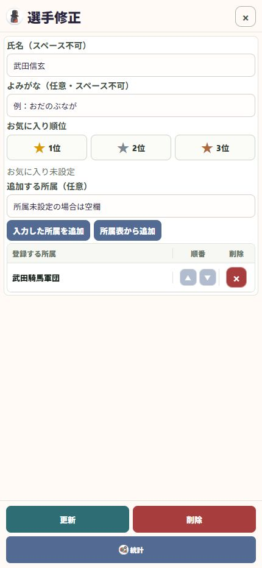

13 / 整理する
選手名・よみがな・所属を直す
誤字を直す操作と、二つの登録をまとめる操作を使い分けます。
操作の入口ホーム → 選手 → 対象選手 → 修正
選手を開く
選手一覧から修正する本人を選び、「修正」を押します。
氏名・よみがなを直す
正しい表記に修正します。氏名とよみがなの途中にはスペースを入れません。
所属を確認する
必要なら所属を追加・削除し、登録する所属を確認します。同じ選手に複数の所属を設定できます。
更新して確認する
「更新」を押し、選手一覧と関連する履歴の表示を確認します。

